M3 · Notes B — Visualization, descriptive statistics, feature engineering (§3.3–3.5)
Module 3 notes, pp. 366–435 (PDF pages 56–125) · Quiz 3 syllabus (with Notes A)
In order, this page covers: why numbers alone are not enough (Anscombe's quartet) and how to choose a chart (3.3.1); the plot types — histograms, boxplots, scatterplots, correlation heatmaps, pair plots, time-series plots and categorical summaries — each with what it reveals, its limitations and its fixes (3.3.2–3.3.8); responsible visualization (3.3.9); descriptive statistics from the mean to Spearman correlation (3.4); and feature engineering, from the "fit on training data only" rule to scaling, binning, encoding, interactions, polynomial, time-window and cyclical features and their risks (3.5).
3.3.1 Why visualizations are necessary
Summary statistics compress data, and compression can hide non-linearity, clusters, gaps, outliers, heteroscedasticity, multimodality, temporal change, data-entry errors and subgroup patterns. Visualization is an analytical instrument for asking questions, not just decoration for results.

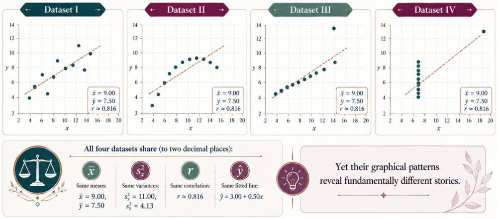
Anscombe's quartet (1973): four datasets with nearly identical means, variances, correlations and fitted regression lines, yet completely different plots — one linear, one curved, one a line with a single outlier, one vertical cluster with one high-leverage point. Lesson: never rely on numerical summaries alone.
Choosing a chart starts with a question, not a chart type. The choice depends on the variable types, the analytical goal, the sample size, the number of groups, whether there is a meaningful order (time), and the audience. The aim is not many charts, but the ones that make relevant structure visible.
Numbers compress and can hide structure (Anscombe); pick the chart from the question and the variable types.
3.3.2 Histograms

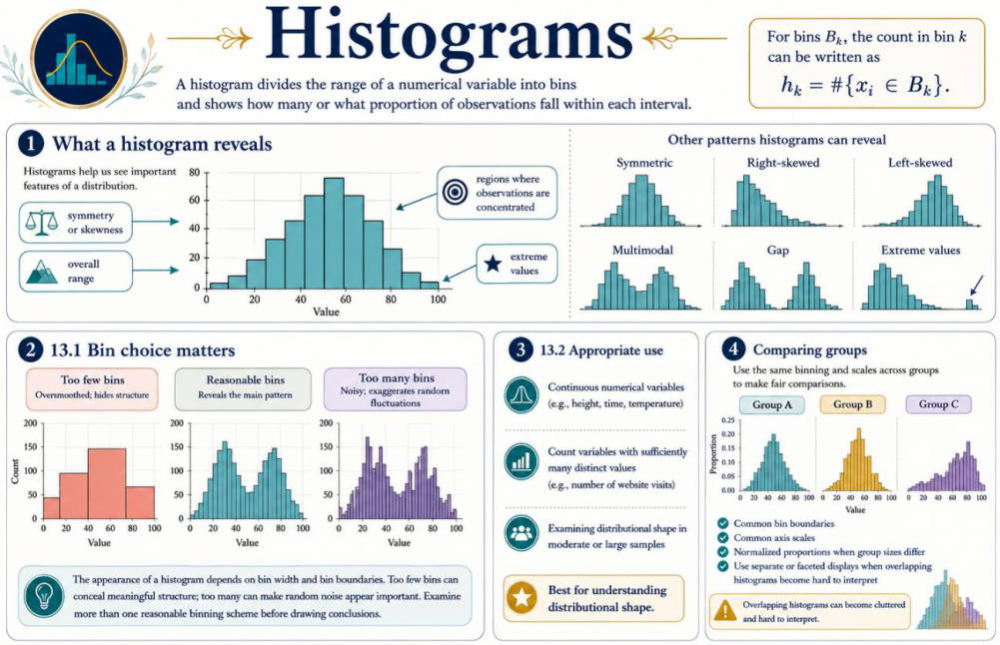
A histogram splits a numerical variable's range into bins and shows the count (or proportion) in each. It reveals symmetry/skewness, modality, gaps, extremes, range and where values concentrate.
Bin choice matters. Too few bins hide structure (over-smoothing); too many make noise look like signal. Try several reasonable bin widths and keep only features that survive. Best for continuous variables and counts with many distinct values, in moderate-to-large samples. Comparing groups: use common bin boundaries, common axes, normalised proportions when group sizes differ, and separate (faceted) panels when overlapping bars get confusing.
Histogram = shape at a glance, but its picture depends on bins: check more than one bin width, and compare groups on common bins and axes.
3.3.3 Boxplots

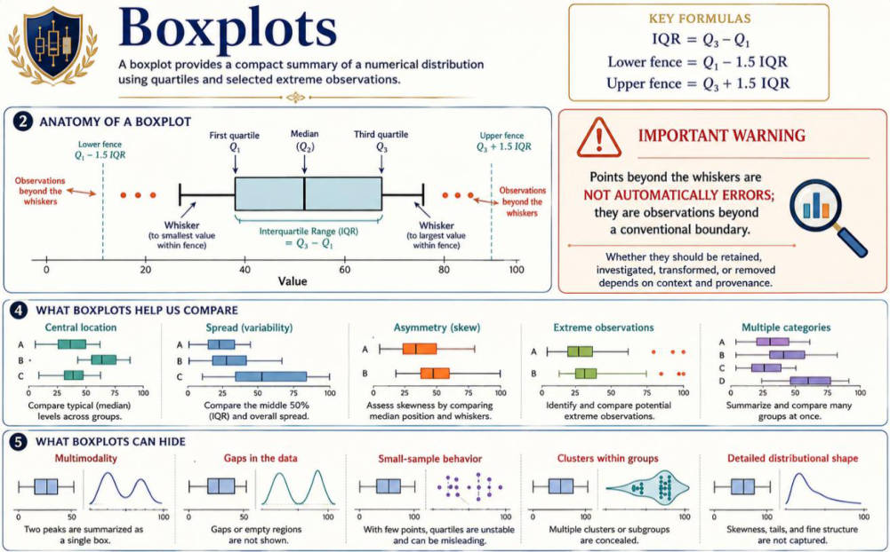
A boxplot shows the median, , , the IQR , whiskers, and points beyond the whiskers. Conventional fences:
with whiskers reaching the most extreme observations inside the fences. (The notes print the upper fence as ; the standard rule, and the notes' own footnote 281, use .)
Points beyond the whiskers are not automatically errors — just observations past a conventional line. Retain, investigate, transform or remove depending on context and provenance.
| strengths | limitations |
|---|---|
| comparing many groups on centre, spread, asymmetry and extremes | hides multimodality, gaps, clusters, small-sample behaviour and detailed shape |
Fix: overlay the individual points, or pair with a violin plot (box + density, Hintze & Nelson 1998).
Boxplot: median, IQR, fences at IQR; great for comparing groups, blind to modes and gaps; outliers are prompts to investigate.
3.3.4 Scatterplots

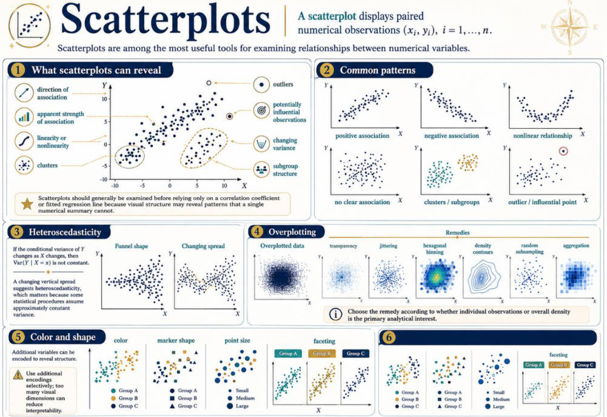
A scatterplot of pairs shows the direction, apparent strength and form (linear or not) of a relationship, plus clusters, outliers, influential points, changing variance and subgroup structure. Look at it before trusting a correlation coefficient or fitted line.
- Heteroscedasticity: changes with — a funnel shape. Matters because many methods assume constant variance.
- Overplotting: with many points, marks overlap and hide the pattern. Fixes: transparency, jittering, hexagonal binning, density contours, random subsampling, aggregation — depending on whether individual points or overall density matter.
- Extra variables via colour, marker shape, size or faceting reveal subgroups — but too many encodings make the plot harder to read.
Scatterplot first, statistic second: it shows form, clusters, outliers and funnels; use transparency/hexbin against overplotting.
3.3.5 Correlation heatmaps

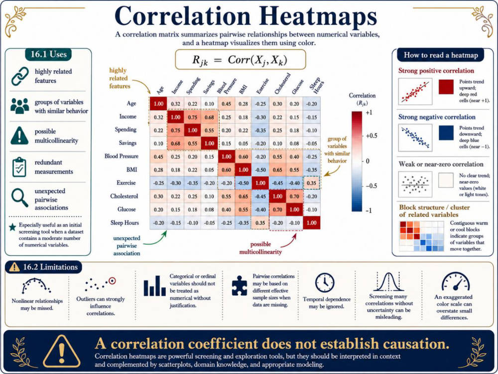
A heatmap colours the correlation matrix . Uses: highly related features, groups of variables behaving alike, possible multicollinearity, redundant measurements, unexpected associations — a screening tool for a moderate number of numerical variables.

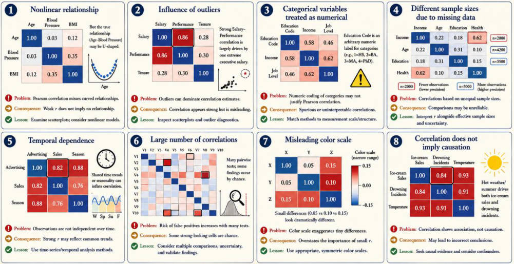
| limitation | notes' example | consequence | fix |
|---|---|---|---|
| non-linear relationship | U-shaped age vs blood pressure | though strongly related | scatterplot; Spearman for monotonic relations |
| outliers | one $5 M executive among $30–100 k salaries | correlation driven by one point | scatterplot, outlier checks; Spearman or biweight midcorrelation |
| categorical treated as numerical | education coded 1–4 | implies equal gaps between levels | Spearman for ordinal; polychoric correlation |
| different per pair (missing data) | age–education on 5,000 rows, income–health on 2,000 | cells shown together with very different precision | listwise deletion or multiple imputation for a consistent |
| temporal dependence | daily ad spend vs daily sales over 2 years | shared trend/seasonality inflates | detrend (use changes, ), cross-correlation |
| too many correlations | 100 variables → 4,950 pairs | some strong values by pure chance | Bonferroni or FDR corrections; validate |
| misleading colour scale | narrow scale makes 0.05 vs 0.15 look dramatic | over-interpretation | symmetric scale from to |
| causation | ice-cream sales vs drownings | both driven by hot weather | experiments (A/B tests), causal methods (DAGs, instrumental variables) |
A correlation heatmap is a screening tool for linear association — confirm striking cells with scatterplots, robust/rank correlations and a sensible colour scale.
3.3.6 Pair plots

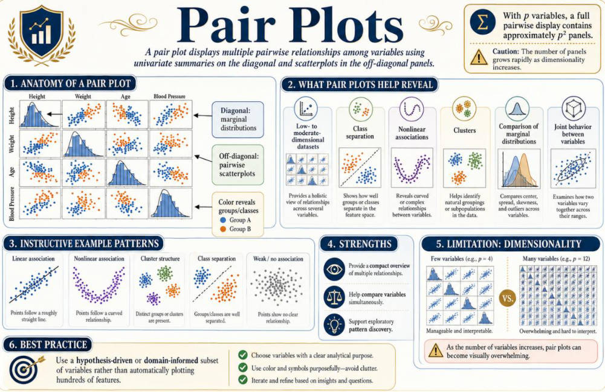
A pair plot puts univariate distributions on the diagonal and scatterplots off the diagonal, optionally coloured by group/class. Useful for low-to-moderate dimensions: class separation, non-linear associations, clusters, comparing marginals, joint behaviour. But panels grow like (10 variables → ~100 panels), so choose a hypothesis-driven, domain-informed subset rather than plotting hundreds of features.
3.3.7 Time-series plots

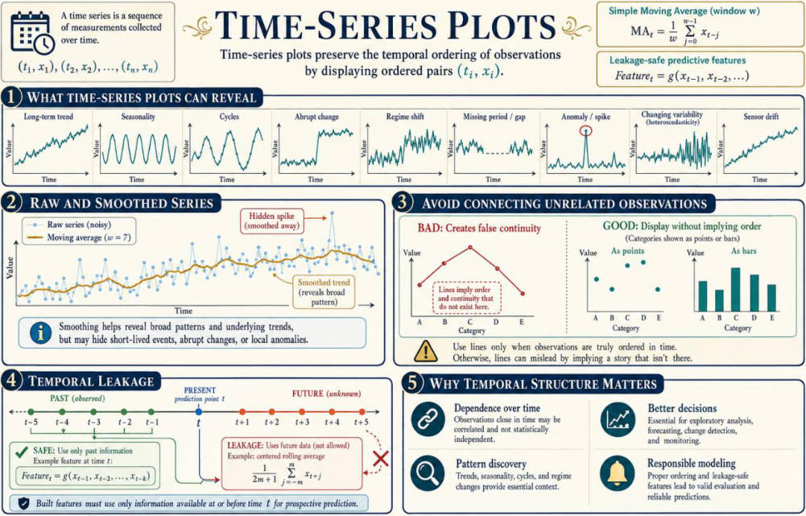
A time-series plot keeps the order and can show trend, seasonality, cycles, abrupt changes, regime shifts, missing periods, anomalies, changing variability and sensor drift. Observations close in time are usually not independent.
- Raw + smoothed: overlay a moving average — but smoothing can hide short events, abrupt changes and local anomalies, so keep the raw series.
- Don't connect unrelated observations: a line implies continuity and order.
- Temporal leakage: prediction features may only use the past, . A centred rolling average (which uses future values) is fine for describing the past but leaks for prediction.
3.3.8 Categorical summaries

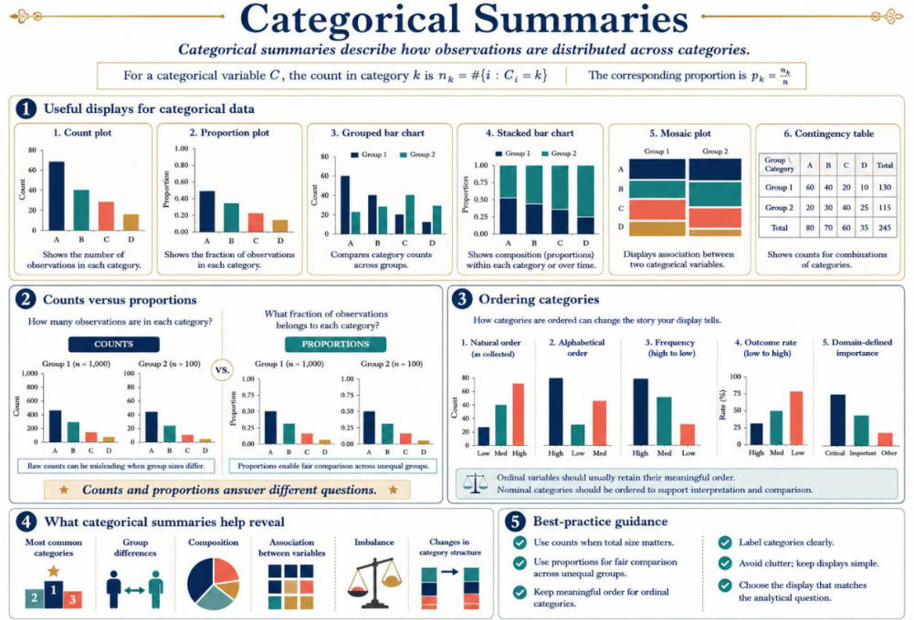
For a categorical : counts and proportions , shown as count/proportion plots, grouped or stacked bars, mosaic plots or contingency tables. Counts answer "how many?", proportions "what fraction?" — prefer proportions when groups differ in size. Order: keep the natural order of ordinal categories; for nominal ones sort by frequency, outcome rate or domain importance to make comparison easy.
3.3.9 Principles of responsible visualization

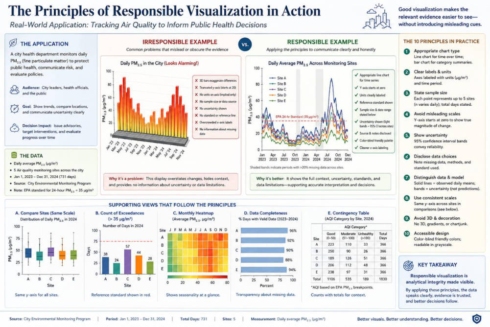
A chart is an argument: scales, axes, colours, aggregation, filtering and annotation steer what viewers see. A responsible visualization:
- uses a chart type that fits the variables and the question;
- labels axes, units and categories; states when it matters;
- avoids misleading or distorted scales;
- shows uncertainty when the claim depends on it;
- discloses filtering, exclusions, transformations and aggregation;
- distinguishes raw data from fitted trends/model output;
- uses consistent scales for intended comparisons;
- avoids 3-D and decorative distortion;
- stays readable for colour-vision limitations and in greyscale.
Each plot type has a job and blind spots; responsible charts are honest about scales, , uncertainty and what was filtered.
3.4 Descriptive statistics
Numbers that quantify location, spread, relative position, asymmetry and association — complements to plots, never interpreted in isolation.
3.4.1–3.4.4 Mean, weighted mean, median
- Mean : uses every value, so it is pulled by extremes. : , although four of five values lie between 2 and 4.
- Weighted mean : when observations count unequally — survey weights, class weights, exposure durations, combining groups with different representation. Document what the weights mean.
- Median : the middle ordered value ( for odd ; average of the two middle values for even ). Resistant: the median of is , unchanged by the 100.
- Mean vs median: a big gap signals skewness, extremes, mixtures or data problems. Mean for roughly symmetric data without heavy outliers; median for skewed data; reporting both is often most informative (household income: mean ≫ median).

3.4.5 Variance and standard deviation
Dividing by makes an unbiased estimator of the population variance ( for independent samples). Variance is in squared units; the SD is in the original units and easier to read. Both are sensitive to outliers (squared deviations). Robust alternatives: (spread of the middle 50%) and .

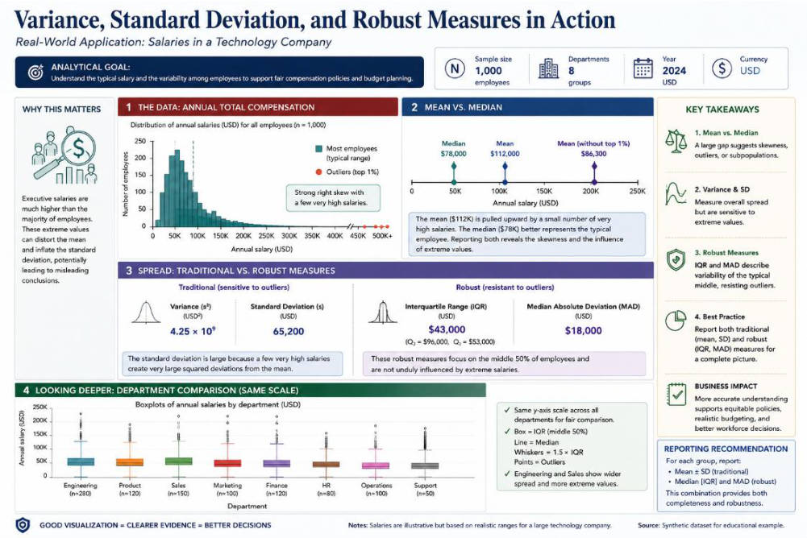
3.4.6 Quantiles
The -quantile has about a fraction of observations below it: (first quartile), (median), , , . Percentiles are quantiles on a 0–100 scale; quartiles are the 25th/50th/75th. Quantiles need no distributional assumption and serve skewed data, operational/clinical thresholds, service levels, tails, screening extremes and group comparisons.
Estimation conventions differ between software, which matters for small :
Latencies ms; the SLA requires .
- Type 7 (NumPy default): position → ms → passes.
- Type 6 (Excel PERCENTILE.EXC, R type 6): position → ms → fails.
Same data, opposite verdicts — a 9 ms difference from software defaults alone. Flag quantiles from small samples (), and state the method in reports and contracts.

3.4.7 Skewness
Right-skewed examples: income, waiting times, transaction amounts, healthcare costs, follower counts. The statistic itself is sensitive to extremes — read it with a histogram or boxplot. A log transform reduces right skew for non-negative variables (house prices), but only if the transformed scale still makes sense for the task.

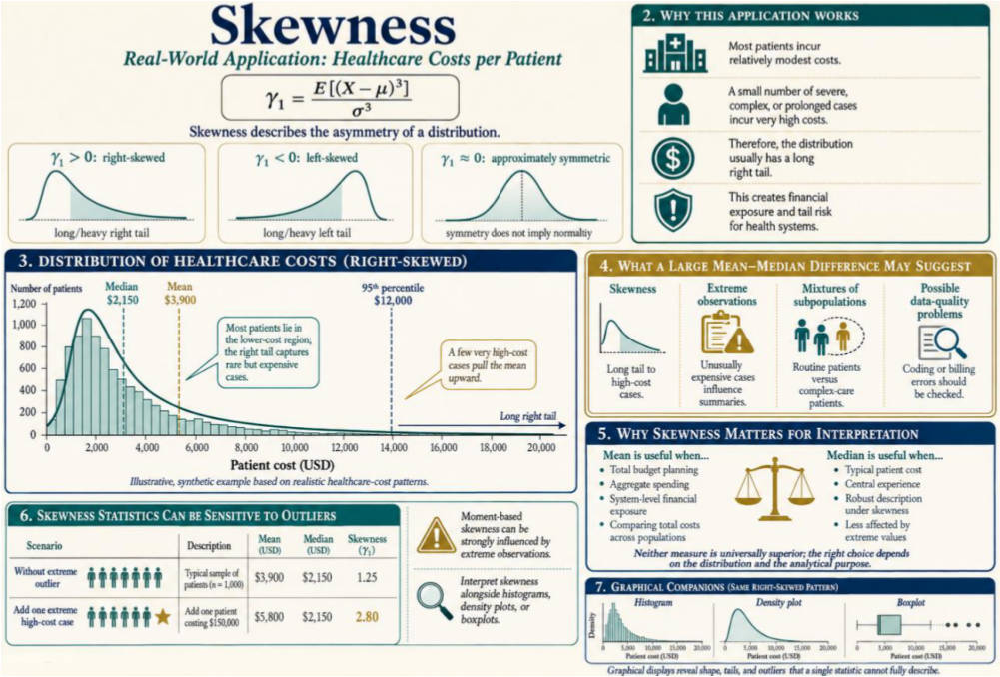

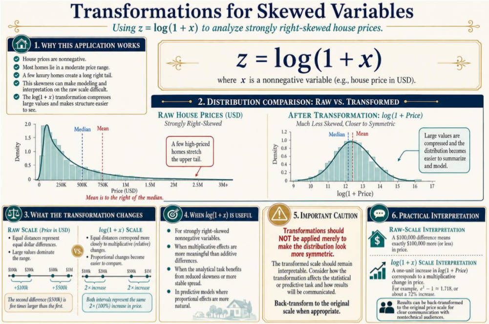
3.4.8–3.4.9 Covariance and correlation
- Covariance: sign gives the direction of co-movement; its units are the product of the two variables' units, so magnitudes are not comparable across pairs (and change when you rescale).
- Pearson : unit-free strength of linear association. perfect linear; means no linear association — not no relationship: with symmetric about 0 gives .
- Pearson is affected by outliers, restricted ranges, mixtures of groups, non-linearity, selection effects and temporal trends; a common trend can make two unrelated series correlate.
- Spearman , without ties: measures monotonic association; suits ordinal data and non-linear monotonic relations, and is less (not totally) sensitive to outliers.
- Neither establishes causation.

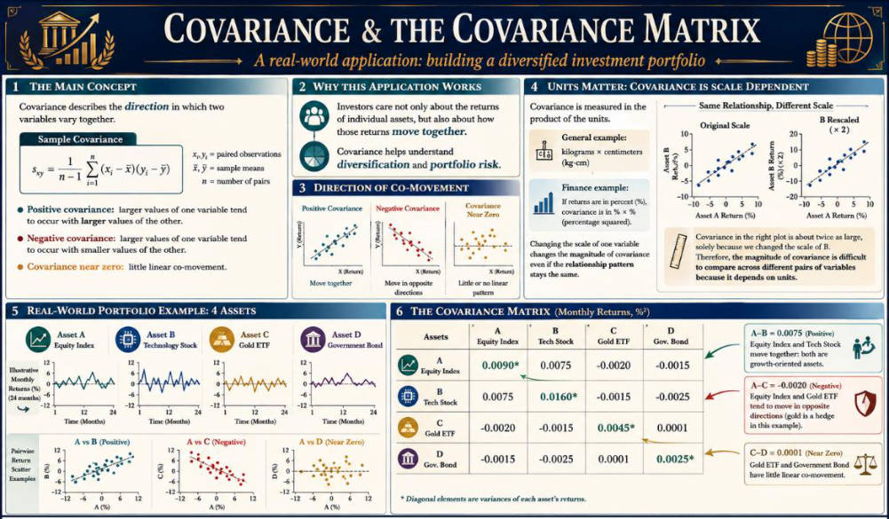

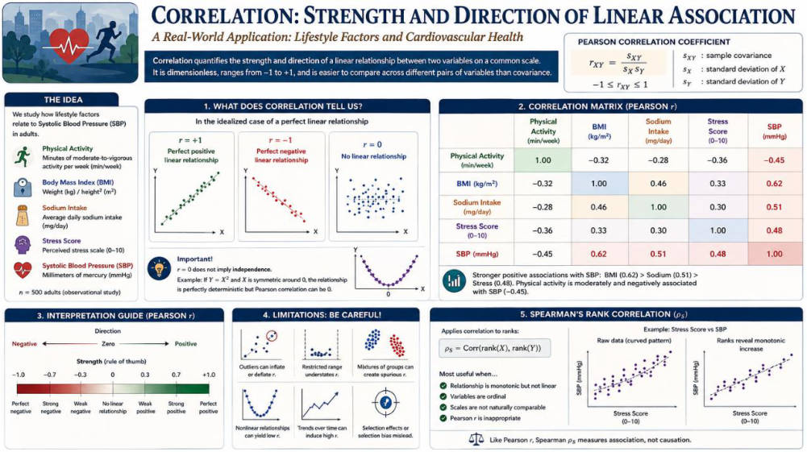
Report centre with mean and median, spread with SD and IQR/MAD, tails with quantiles (state the method), association with a scatterplot plus Pearson or Spearman — and none of it proves cause.
3.5.1 What is feature engineering?
Feature engineering turns raw inputs into representations that make relevant structure easier for a model to use: , through scaling, encoding, aggregation, transformation, selection or new variables. It can improve numerical stability, encode domain knowledge, express non-linearity, represent history, reduce dimension, encode categories, and improve interpretability. Examples: timestamp → hour/day-of-week/time since last event; date of birth → age at observation; transactions → recent frequency. It usually re-represents information rather than adding new information, and is part of the modelling process (Kuhn & Johnson).
3.5.2 Feature engineering must occur inside the modelling pipeline
Any transformation whose parameters are learned from data is fitted on the training data only, , then applied unchanged to every split:
This covers scaling, imputation, categorical and target encoding, feature selection, dimensionality reduction, vocabulary building and any data-driven transform. Standardising with the mean and SD of the whole dataset before splitting lets test data shape the features, so evaluation is optimistically biased. Safest: put all data-dependent preprocessing inside the pipeline so each fit (including each CV fold) learns its own parameters.
3.5.3–3.5.4 Scaling, standardization and normalization
| transform | formula | use | caution |
|---|---|---|---|
| standardization (z-score, mean–variance normalization) | logistic regression, SVMs, neural nets, PCA, kNN, regularised regression, gradient methods | sensitive to outliers | |
| robust scaling | data with extreme values | — | |
| min–max | bounded inputs | one extreme value sets the range and squashes the rest; fit min/max on training data | |
| unit-vector | when direction matters: documents, embeddings, cosine similarity | ||
| distributional | , | reduce skew, stabilise variance, linearise | changes interpretation (log → relative changes) |
Why scale? Income (0 to ) next to a debt ratio (0 to 1) dominates any distance just because of its units; ridge/lasso penalties also only make sense on comparable scales. Tree-based models split on thresholds and are much less scale-sensitive. "Normalization" means different things in different fields — say exactly which operation.
Log-income (skewed, but now not in dollars — explain it); (handles zeros, helps constant-variance models); log–log website visits vs sales (now linear, coefficients read as percentage changes); age/splines/age bands for mortality risk (non-linear effect); fraud model trained on log(amount) but fed raw amounts in production (train–serving inconsistency); a transform that lifts accuracy from 82% to 84% but can't be explained or reproduced (not worth it).
3.5.5 Binning
Binning maps a continuous to intervals via thresholds . Types: equal-width, equal-frequency (quantile), domain-defined, supervised (outcome-based).
| benefits | risks |
|---|---|
| captures thresholds; less sensitive to tiny measurement noise; interpretable and easy to communicate; lets simple models capture some non-linearity | discards information; artificial jumps at cut-points; unstable predictions near boundaries; hides variation within bins; target leakage if outcome-based cut-points use evaluation data |
Prefer domain thresholds (AQI bands, clinical blood-pressure categories); fit data-driven or supervised bins inside training only.


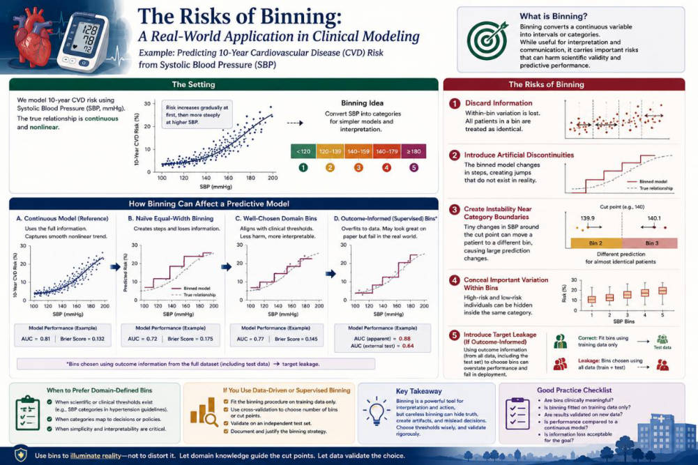
3.5.6 Encoding categorical variables
- Ordinal encoding (low = 1, medium = 2, high = 3) — only for genuinely ordered categories; on nominal ones (colours, countries) it invents an order.
- One-hot encoding — simple and safe, but high cardinality (40,000 US ZIP codes) gives huge sparse matrices and overfitting. With an intercept, drop one category (the reference) to avoid perfect collinearity: for {Male, Female, Other}, , so is Other's level and are differences from Other.
- Frequency encoding — one compact column for high cardinality (cities: LHR 0.4, KHI 0.3, ISL 0.2, PEW 0.1), but categories with equal frequencies become indistinguishable even if they behave very differently.
- Target encoding — powerful for high cardinality, but leaks the target: a row's own outcome feeds its own feature; a category with one row (a lone Engineer who defaulted) is encoded as exactly its label, 1.00. Remedies: out-of-fold / cross-fitting (encode each fold with the other folds' targets), smoothing towards the global mean
and an explicit rule (global mean) for categories unseen in training. (The notes print 0.455 for the lone Engineer; is — the encoding still moves from 1.00 towards the global 0.5, which is the point.) - Rare and unseen categories — merge rare levels into "Other"; hashing into a fixed number of buckets; hierarchical grouping (employer → industry → sector); learned embeddings (neural nets); an explicit unknown category or global default at deployment. A rare category has little data; an unseen one has none.
3.5.7–3.5.8 Interaction and polynomial features
Interaction: the effect of one variable depends on another,
Examples: a drug's effect depending on age, rainfall × soil type, income × household size for expenditure. They add domain knowledge but also complexity — justify and validate them.
Polynomial features (and for two inputs) let linear models fit curves; low degrees stay interpretable. Risks: feature count explodes, multicollinearity, scale sensitivity, wild behaviour outside the training range, overfitting at high degree — use scaling, regularisation and cross-validation.

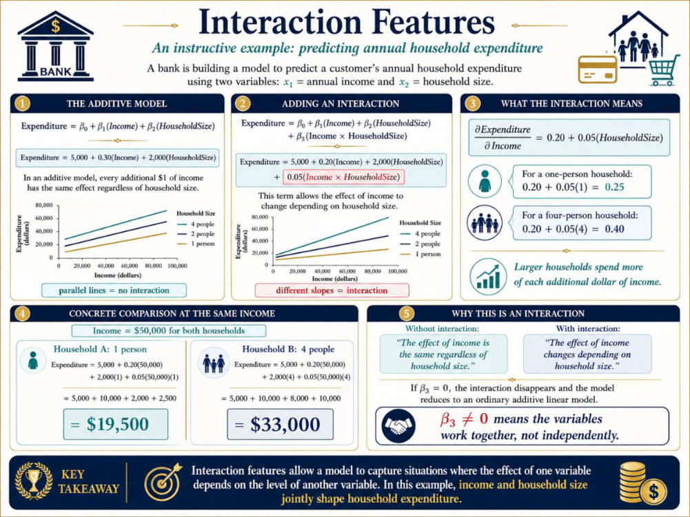

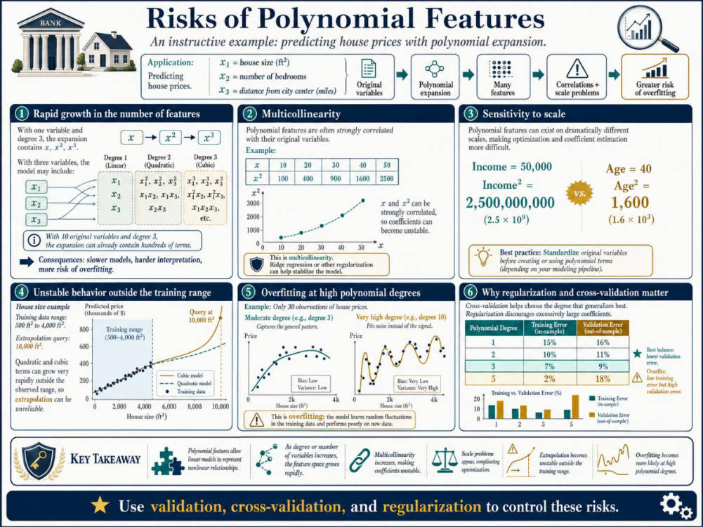
3.5.9 Time-window features
| feature | formula |
|---|---|
| lag | |
| rolling mean | |
| rolling SD | |
| difference / % change | , |
| event count | |
| time since event |
Calendar features: hour, day of week, month, holiday flag, season, working-day flag (e.g. Saturday 15 August, 7 PM → hour 19, day 5 with Monday = 0, month 8, holiday 0, season 2, working day 0). Every feature must use only information available before the prediction time — note that all the windows above start at . Centred windows leak the future; use chronological splits and document feature timestamps.

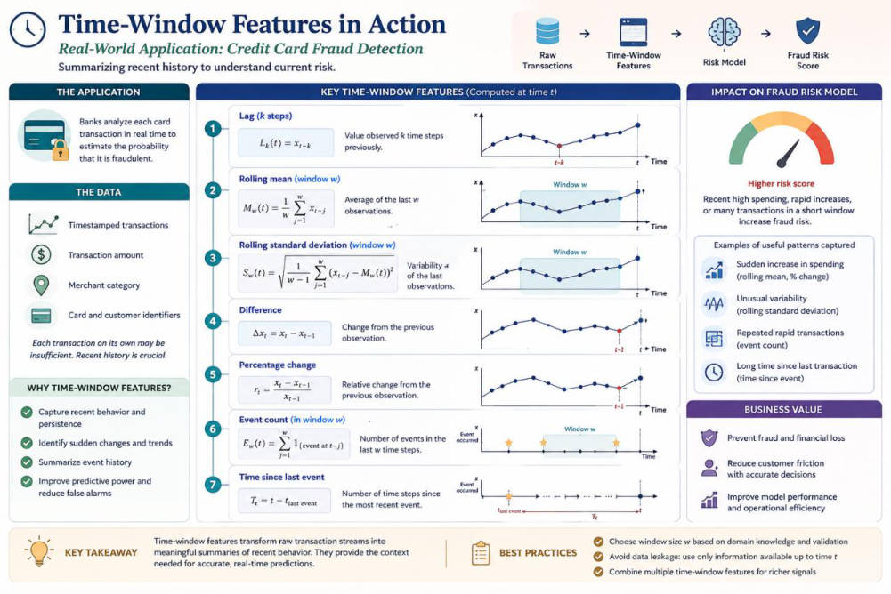

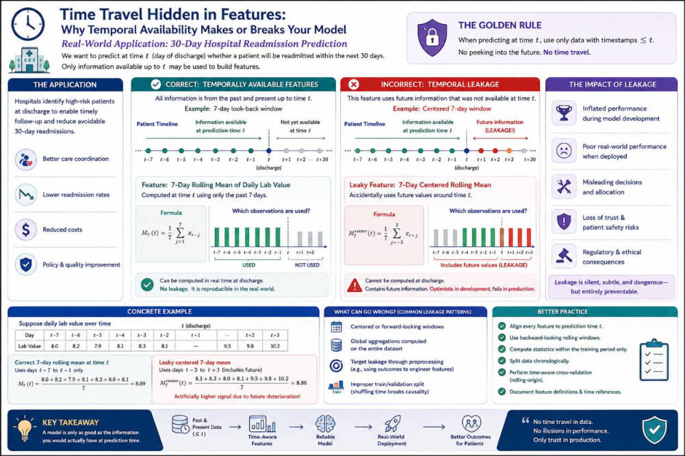
3.5.10 Cyclical feature encoding
Hour 23 and hour 0 are neighbours, but as integers they are 23 apart. Encode a cyclical variable with period as two features:
which places the values on a circle, so the end and start of the cycle are close (electricity demand by hour, restaurant demand by weekday). The same sine/cosine idea gives positional encodings in Transformers, letting them tell "the cat chased the mouse" from "the mouse chased the cat".

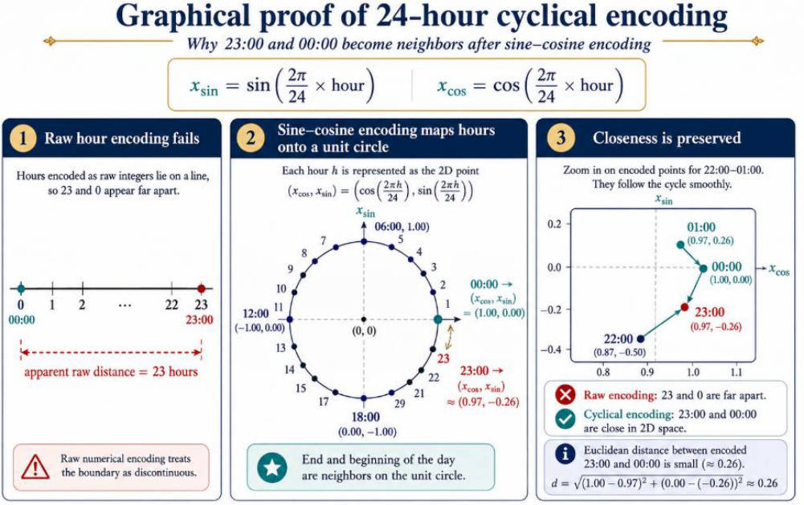
3.5.11 Feature-engineering risks

The eight risks: target leakage, temporal leakage, identity leakage, proxy discrimination (ZIP code standing in for race or income in lending), unstable high-cardinality features (customer ID memorised, useless for new customers), train–serving inconsistency, excessive dimensionality, and spurious interactions. Every engineered feature should be specified by its definition, unit, source variables, computation window, availability time, missing-value rule, version, and justification. Judge a feature not only by validation score but by whether it is valid, reproducible, interpretable where needed, available at prediction time, and robust in deployment.
Fit every data-driven transform on training data only, choose scaling/encoding to fit the model and variable, use only past information in time features, and watch for leakage, proxies and high-cardinality traps.
Source material
The original documents behind these notes. Pick a tab to read it here, page by page, or open it in a new tab.